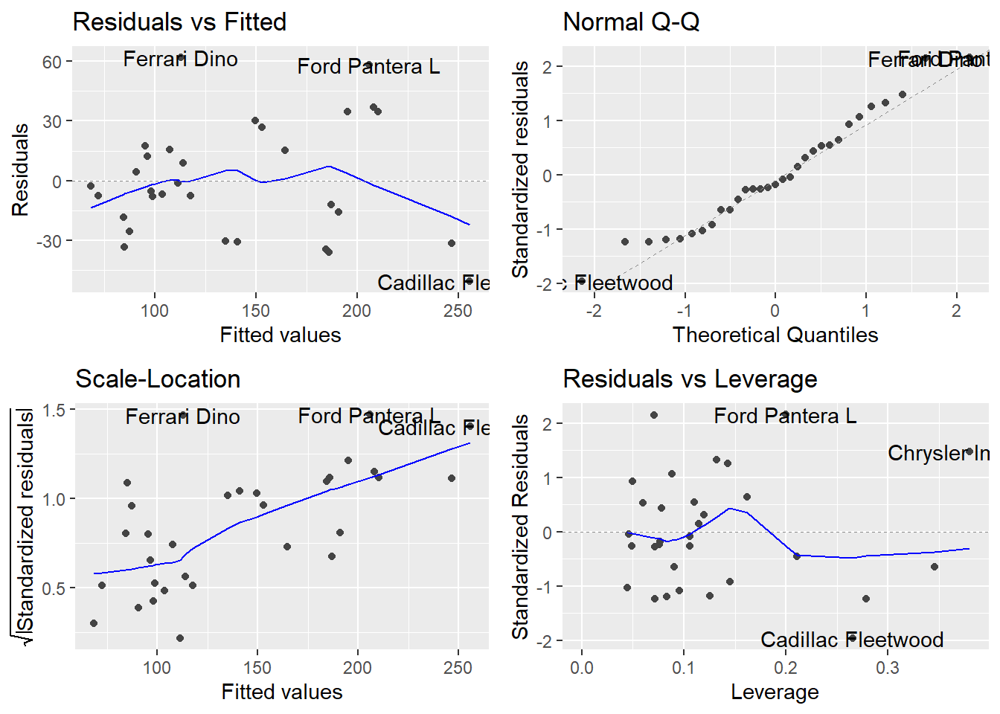
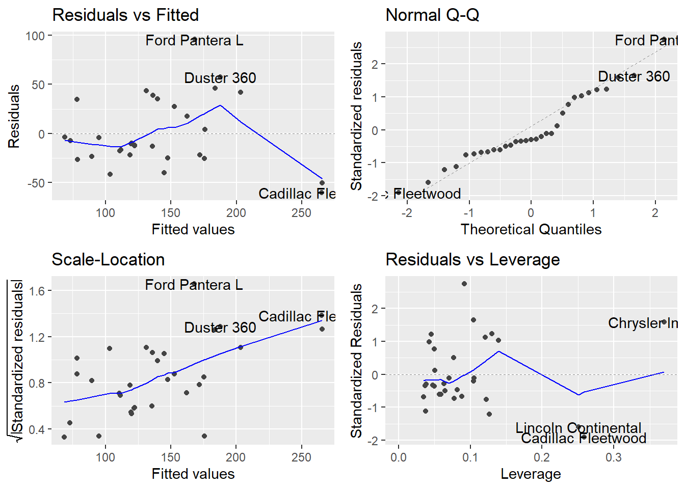
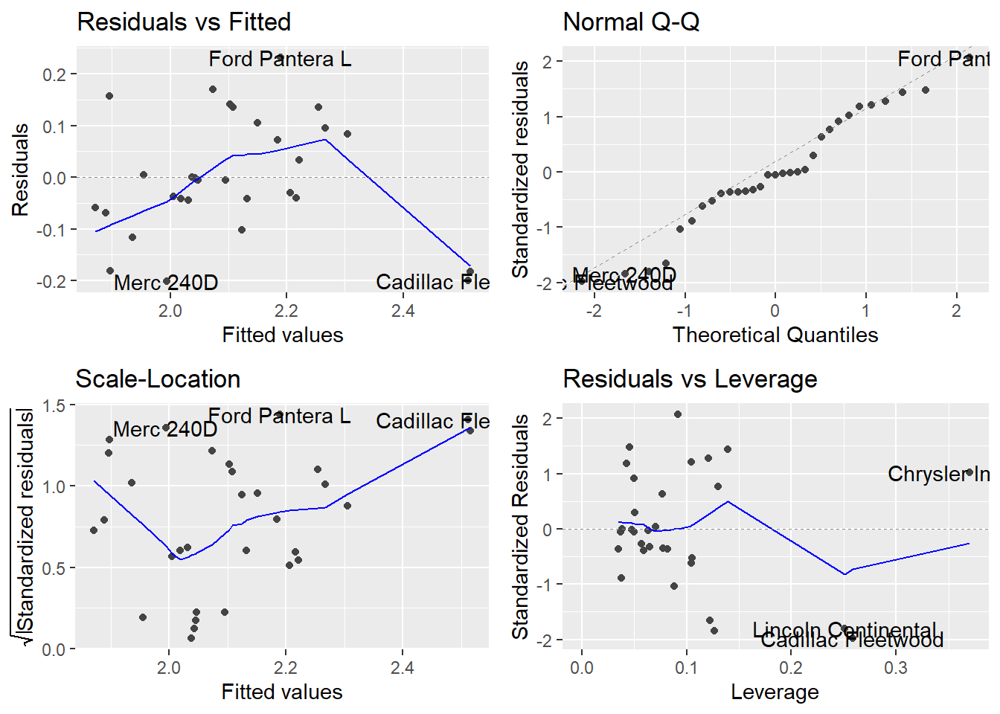
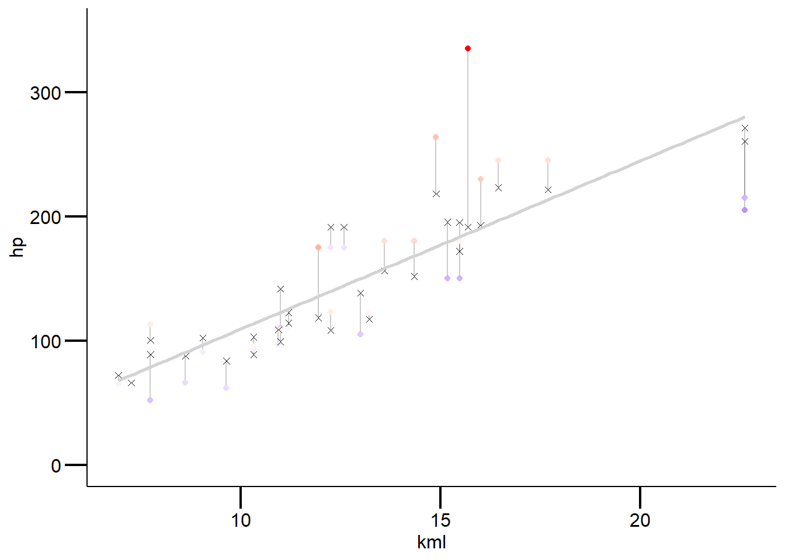

StatKons3: Demo
Download R-Skript
Einfaktorielle ANOVA
# für mehr infos
#https://stat.ethz.ch/R-manual/R-devel/library/datasets/html/mtcars.html
cars <- mtcars %>%
mutate(cyl = as.factor(cyl)) %>%
slice(-31) # lösch die 31ste Zeile
#Alternativ ginge auch das
cars[-31,]
# schaue daten zuerst mal an
#1. Responsevariable
hist(cars$hp) # nur sinnvoll bei grossem n
boxplot(cars$hp)
#2. Responsevariable ~ Prediktorvariable
table(cars$cyl) # mögliches probel, da n's unterschiedlich gross
boxplot(cars$hp ~ cars$cyl) # varianzheterogentität weniger das problem,
# aber normalverteilung der residuen problematisch
# definiere das modell für eine ein-faktorielle anova
aov.1 <- aov(log10(hp) ~ cyl, data = cars)
#3. Schaue Modelgüte an
par(mfrow = c(2,2))
plot(aov.1)
#4. Schaue output an und ordne es ein
summary.lm(aov.1)
#5. bei meheren Kategorien wende einen post-hoc Vergleichstest an
TukeyHSD(aov.1)
#6. Ergebnisse passend darstellen
library(multcomp)
#erstens die signifikanten Unterschiede mit Buchstaben versehen
letters <- multcomp::cld(multcomp::glht(aov.1, linfct=multcomp::mcp(cyl="Tukey"))) # Achtung die kategoriale
#Variable (unsere unabhängige Variable "cyl") muss als Faktor
#definiert sein z.B. as.factor()
#einfachere Variante
boxplot(hp ~ cyl, data = cars)
mtext(letters$mcletters$Letters, at=1:3)
#schönere Variante :)
ggplot(cars, aes(x = cyl, y = hp)) +
stat_boxplot(geom = "errorbar", width = .5) +
geom_boxplot(size = 1) +
annotate("text", x = 1, y = 350, label = "a", size = 7)+
annotate("text", x = 2, y = 350, label = "b", size = 7)+
annotate("text", x = 3, y = 350, label = "c", size = 7)
labs(x = "\nAnzahl Zylinder", y = "Pferdestärke") +
mytheme
#Plot exportieren
ggsave(filename = "statKons/distill-preview.png",
device = "png") # hier kann man festlegen, was für ein Bildformat
#exportiert werden möchte
# Sind die Voraussetzungen für eine Anova verletzt, überprüfe alternative
# nicht-parametische Tests z.B. oneway-Test mit Welch-korrektur für ungleiche
# Varianzen (Achtung auch dieser Test hat Voraussetzungen -> siehe Skript XY)
library(rosetta)
welch1 <- oneway.test(hp ~ cyl, data = cars, var.equal = FALSE)
rosetta::posthocTGH(cars$hp, cars$cyl, method = "games-howell")Mehrfaktorielle ANOVA

Einfache Regression
# inspiriert von Simon Jackson: http s://drsimonj.svbtle.com/visualising-residuals
cars <- mtcars %>%
#ändere die unabhängige Variable mpg in 100Km/L
mutate(kml = (235.214583/mpg)) # mehr Infos hier: https://www.asknumbers.com/mpg-to-L100km.aspx
# %>% # klone data set
# slice(-31) # # lösche Maserrati und schaue nochmals Modelfit an
#############
##1.Daten anschauen
############
# Zusammenhang mal anschauen
# Achtung kml = 100km pro Liter
plot(hp ~ kml, data = cars)
# Responsevariable anschauen
boxplot(cars$hp)
# Korrelationen uv + av anschauen
# Reihenfolge spielt hier keine Rolle, wieso?
cor(cars$kml, cars$hp) # hängen stark zusammen
###################
#2. Modell definieren: einfache regression
##################
model <- lm(hp ~ kml, data = cars)
summary.lm(model)
###############
#3.Modeldiagnostik und ggf. Anpassungen ans Modell oder ähnliches
###############
# semi schöne Ergebnisse
library(ggfortify)
ggplot2::autoplot(model) + mytheme # gitb einige Extremwerte => was tun? (Eingabe/Einlesen 
#überprüfen, Transformation, Extremwerte nur ausschliessen mit guter Begründung)
# erzeuge vorhergesagte Werte und Residualwerte
cars$predicted <- predict(model) # bilde neue Variable mit geschätzten y-Werten
cars$residuals <- residuals(model)
# schaue es dir an, sieht man gut was die Residuen sind
d <- cars %>%
dplyr::select(hp, kml, predicted, residuals)
# schauen wir es uns an
head(d, 4)
#visualisiere residuen
ggplot(d, aes(x = kml, y = hp)) +
# verbinde beobachtete werte mit vorausgesagte werte
geom_segment(aes(xend = kml, yend = predicted)) +
geom_point() + # Plot the actual points
geom_point(aes(y = predicted), shape = 4) + # plot geschätzten y-Werten
# geom_line(aes(y = predicted), color = "lightgrey") # alternativ code
geom_smooth(method = "lm", se = FALSE, color = "lightgrey") +
# Farbe wird hier zu den redisuen gemapped, abs(residuals) wegen negativen zahlen
geom_point(aes(color = abs(residuals))) +
# Colors to use here (für mehrere farben verwende color_gradient2)
scale_color_continuous(low = "blue", high = "red") +
scale_x_continuous(limits = c(0, 40)) +
scale_y_continuous(limits = c(0, 300)) +
guides(color = "none") + # Color legende entfernen
labs(x = "\nVerbraucht in Liter pro 100km", y = "Motorleistung in PS\n") +
mytheme
##########
#4. plotte Ergebnis
##########
ggplot(d, aes(x = kml, y = hp)) +
geom_point(size = 4) +
# geom_point(aes(y = predicted), shape = 1, size = 4) +
# plot regression line
geom_smooth(method = "lm", se = FALSE, color = "lightgrey") +
#intercept
geom_line(aes(y = mean(hp)), color = "blue") +
mytheme
Multiple regression
# Select data
cars <- mtcars %>%
slice(-31) %>%
mutate(kml = (235.214583/mpg)) %>%
dplyr::select(kml, hp, wt, disp)
################
# 1. Multikollinearitüt überprüfen
# Korrelation zwischen Prädiktoren kleiner .7
cor <- cor(cars[, -2])
cor[abs(cor)<0.7] <- 0
cor #
##### info zu Variablen
#wt = gewicht
#disp = hubraum
###############
#2. Responsevariable + Kriteriumsvariable anschauen
##############
# was würdet ihr tun?
############
#3. Definiere das Model
############
model1 <- lm(hp ~ kml + wt + disp, data = cars)
model2 <- lm(hp ~ kml + wt, data = cars)
model3 <- lm(log10(hp) ~ kml + wt, data = cars)
#############
#4. Modeldiagnostik
############
library(ggfortify)
ggplot2::autoplot(model1)
ggplot2::autoplot(model2) # besser, immernoch nicht ok => transformation? vgl. model3
ggplot2::autoplot(model3)
############
#5. Modellfit vorhersagen: wie gut sagt mein Modell meine Daten vorher
############
#es gibt 3 Mögliche Wege
# gebe dir predicted values aus für model2 (für vorzeigebeispiel einfacher :)
# gibts unterschidliche varianten die predicted values zu berechnen
# 1. default funktion predict(model) verwenden
cars$predicted <- predict(model2)
# 2. datensatz selber zusammenstellen (nicht empfohlen): wichtig, die
# prädiktoren müssen denselben
# namen haben wie im Model
# besser mit Traindata von Beginn an mehr Infos hier: https://www.r-bloggers.com/using-linear-regression-to-predict-energy-output-of-a-power-plant/
new.data <- tibble(kml = sample(seq(6.9384, 22.61, .3), 31),
wt = sample(seq(1.513, 5.424, 0.01), 31),
disp = sample(seq(71.1, 472.0, .1), 31))
cars$predicted_own <- predict(model2, newdata = new.data)
# 3. train_test_split durchführen (empfohlen) muss jedoch von beginn an bereits
# gemacht werden - Logik findet ihr hier: https://towardsdatascience.com/train-test-split-and-cross-validation-in-python-80b61beca4b6 oder https://towardsdatascience.com/6-amateur-mistakes-ive-made-working-with-train-test-splits-916fabb421bb
# beispiel hier: https://ijlyttle.github.io/model_cv_selection.html
cars <- mtcars %>%
mutate(id = 1:nrow(.)) %>% # für das mergen der Datensätze
mutate(kml = (235.214583/mpg)) %>%
dplyr::select(kml, hp, wt, disp, id)
train_data <- cars %>%
dplyr::sample_frac(.75) # für das Modellfitting
test_data <- dplyr::anti_join(cars, train_data, by = 'id') # für den Test mit predict
# erstelle das Modell und "trainiere" es auf den train Datensatz
model2_train <- lm(hp ~ kml + wt, data = train_data)
# mit dem "neuen" Datensatz wird das Model überprüft ob guter Modelfit
train_data$predicted_test <- predict(model2_train, newdata = test_data)
# Residuen
train_data$residuals <- residuals(model2_train)
head(train_data)
#weiterführende Infos zu "machine learning" Idee hier: https://stat-ata-asu.github.io/MachineLearningToolbox/regression-models-fitting-them-and-evaluating-their-performance.html
#wichtigstes Packet in dieser Hinsicht ist "caret": https://topepo.github.io/caret/
#beste Philosophie ist tidymodels: https://www.tidymodels.org
#----------------
# Schnelle variante mit broom
d <- lm(hp ~ kml + wt+ disp, data = cars) %>%
broom::augment()
head(d)
ggplot(d, aes(x = kml, y = hp)) +
geom_segment(aes(xend = kml, yend = .fitted), alpha = .2) +
geom_point(aes(color = .resid)) +
scale_color_gradient2(low = "blue", mid = "white", high = "red") +
guides(color = "none") +
geom_point(aes(y = .fitted), shape = 4) +
scale_y_continuous(limits = c(0,350)) +
geom_smooth(method = "lm", se = FALSE, color = "lightgrey") +
mytheme
############
# 6. Modellvereinfachung
############
# Varianzpartitionierung
library(hier.part)
cars <- mtcars %>%
mutate(kml = (235.214583/mpg)) %>%
select(-mpg)
names(cars) # finde "position" deiner Responsevariable
X = cars[, -3] # definiere all die Prädiktorvariablen im Model (minus Responsevar)
# dauert ein paar sekunden
hier.part(cars$hp, X, gof = "Rsqu")
# alle Modelle miteinander vergleichen mit dredge Befehl: geht nur bis
# maximal 15 Variablen
model2 <- lm(hp ~ ., data = cars)
library(MuMIn)
options(na.action = "na.fail")
allmodels <- dredge(model2)
head(allmodels)
# Wichtigkeit der Prädiktoren
MuMIn::importance(allmodels)
# mittleres Model
avgmodel<- MuMIn::model.avg(get.models(allmodels, subset=TRUE))
summary(avgmodel)
# adäquatest model gemäss multimodel inference
model_ad <- lm(hp ~ carb + disp + wt, data = mtcars)
summary(model_ad)